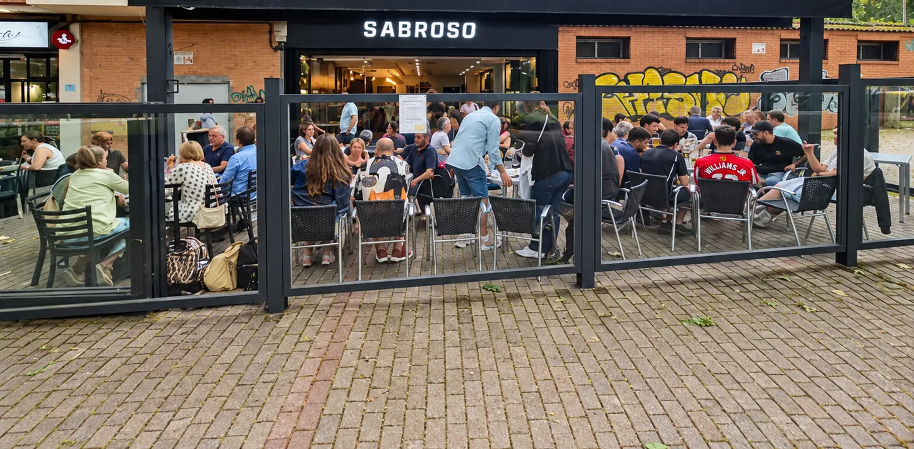
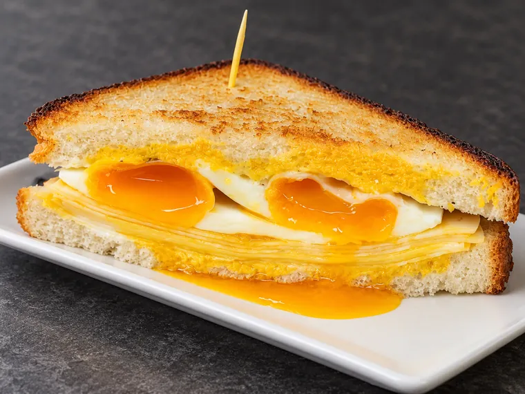
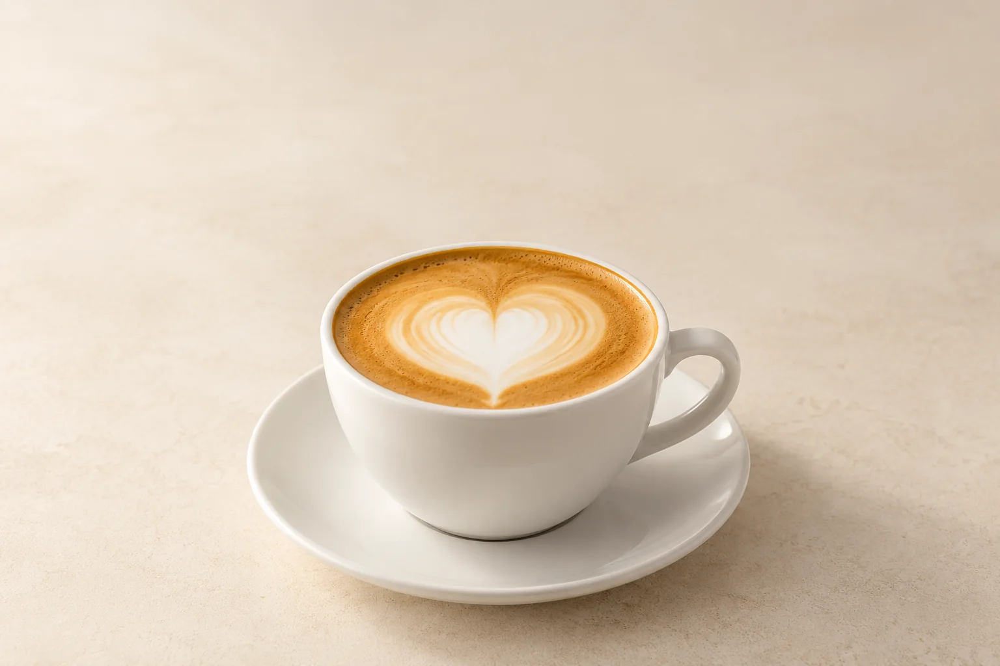

Empezamos por un pincho.



01 / 04
Y un café que alarga el rato.

Barra · Mesa · Terraza
Cada rato tiene su sitio.

Barra
El primer pincho, aquí.
Para empezar, la barra.

Mesa
Las mejores conversaciones se alargan.
Mesas que se juntan para comer en grupo.

Terraza
Fuera también se está muy bien.
Junto al parque.
Y para seguir…
La carta, en tres partes. Elige por dónde empezar.